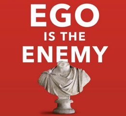

Ego dushmaning (birinchi qism)
Ego nima? Ego bu - meni o’zimga yaxshi ko’rsatadigan, o’zimni oqlashga harakat qiladigan va boshqalarni aybdor qilib ko’rastadigan, meni xaq va baland deb ko’rsatadigan tuyg’u (sodda qilib aytganda - kibr).
Nega ego bu dushman, ahir u meni Elon Musk yoki Aleksandr Makedonskiylarga o’xshab katta va do’vyurak ishlar qilishga undamaydimi? Ha, ammo bu ego shu odamni halok etishi mumkin.
Ego ko’r qiladi
“Men bu ishni qilganman” deyman, ammo bu jarayonning qolgan qisimlarini ko’rmayman. Buning hayotiy misolini yosh bo’ilb turib muvaffaqiyatga erishganlarda kuzatda bo’ladi. Katta pul topib, katta ishxonaga kirib hammaga maslahat berishni boshlaydi, hattoki bu uning sohasiga taalluqli bo’lmasaham. Nima sababdan? Chunki ular “Men ko’p pu topdim, demak men aqilliman, demak mening maslahatlarim ham aqilli” deb o’ylashadi - shu kibr emasmi? Bundan saqilanish uchun bir haqiqatni tan olishlari kerak “Shunchaki omadlari kulib boqganini”. Morgan Housel “Pul psixologiyasi” kitobida - “Omad risk bilan birga keladi” degan.
Katta dunyoqarash orqali katta natijalarga erishish mumkun deyishadi, ammo ko’p chilik uchun bu to’g’ri kelmaydi. Menga o’xshagan oddiy odamlar boshida bir ish qiladi - oxshasa davom etadi va keginchalik yurishni davom etish uchun yo’l ko’rinadi. Masalan “Worl Of Wakraft” degan o’yin bor, oyini boshlaganingizda sizga xaritaning bir qismi ko’rinadi, ammo rivojlanganingiz sari xarita kattalshib boraveradi.
Egoni nima o’stiradi?
Rayan Holidayning aytishi bo’yicha bu zamon sababli. Nega? Birinchi sababi: chunki oldin oddiy halq 90% dan ko’priq bolgan, ammo hozir barcha “yulduz”. Barcha kuzatadigan ijtimoiy tarmoqlarga qarasangiz biri tadbirkor hali daromad topmagan bo’lsaham, boshqasi esa CEO 4ta dona ishchisi bo’lsa ham. Ikkinchisi esa: ko’p gapirish. Qilishni niyat qilgan bo’lsak ham, qilmagan bo’lsak ham gapiraveramiz “Biz bu ishni qilmoqchimiz”, “Shunday qilish niyatimiz bor”.
(Ko’p gapirishning zararini boshqa matinda ko’rib chiqaman)